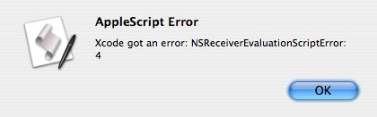
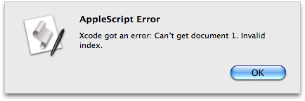

More Features
AppleScript continues to evolve and improve with each release of Mac OS X. AppleScript in Leopard is a significant update that features full Unicode support, an enhanced application object, new scriptable system preferences, read/write property list functionality, new Scripting Bridge frameworks to enable other languages to send Apple Events, in addition to the following improvements:
Updated Folder Action Support
Enjoy greater reliability with folder actions, which are triggered by the file system instead of the Finder. Folder actions now have their own server, as each folder action now runs its own copy of the new AppleScript Runner application.
Descriptive Error Messages
As part of the dramatically improved scripting frameworks, error sensing and reporting have been updated to provide more descriptive reporting. For example, if the following script is run when the Xcode application has no open documents, an error will occur:
tell application "Xcode" to get the name of the front document
Here's the error message displayed in versions of Mac OS X prior to Leopard:

And here's the error message displayed in Mac OS X Leopard:

AppleScript Language Guide
Have examples and constructs of the AppleScript language at your fingertips. AppleScript Language Guide, updated for Leopard, is the essential guide for scripters and developers.
64-Bit Support
From the user's perspective, AppleScript remains the same but the AppleScript under-pinnings now have built-in 64-bit support, enabling it to continue to evolve with future releases of Mac OS X.